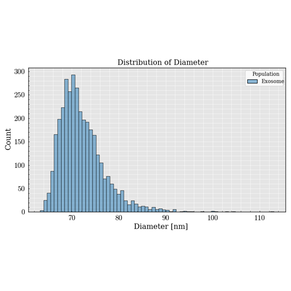
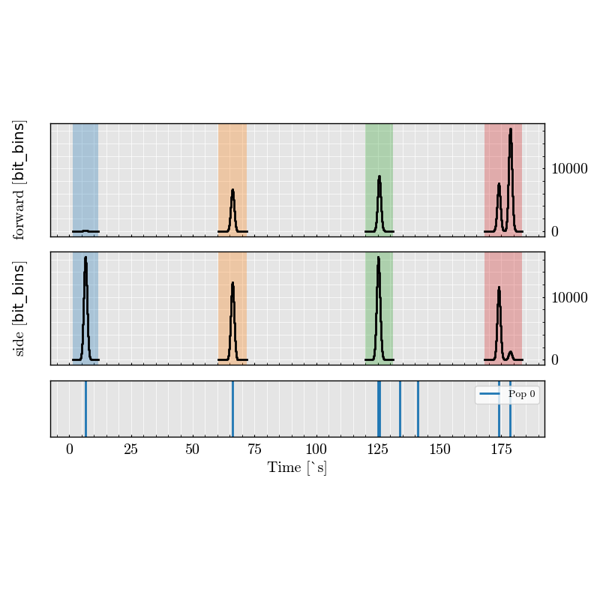
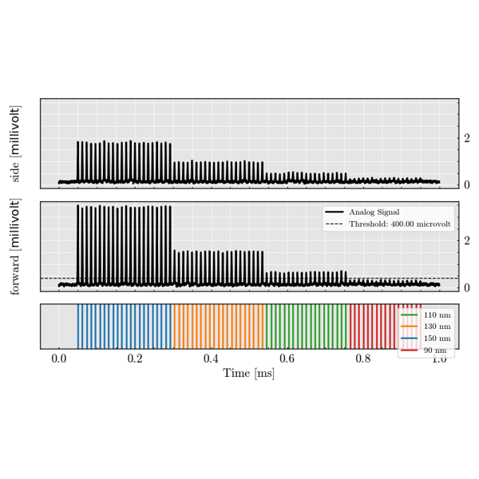
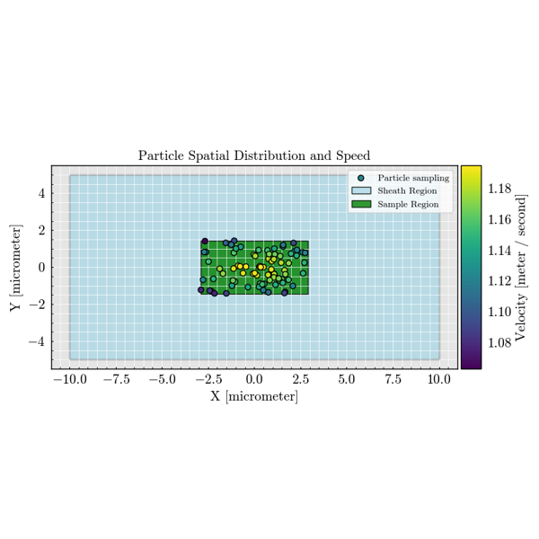
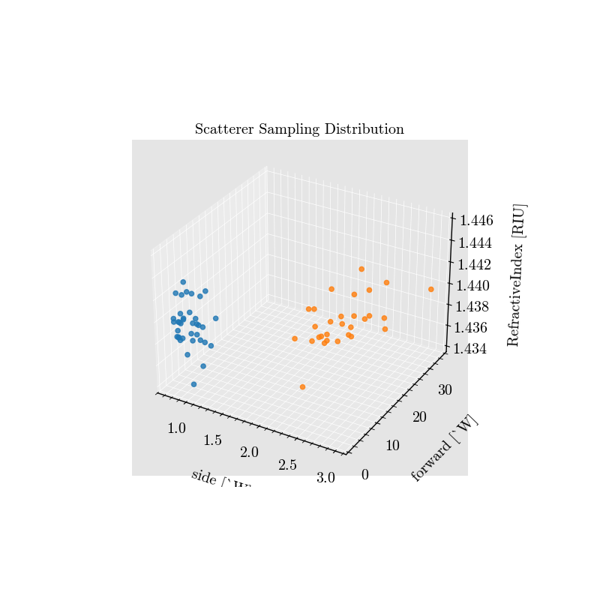

Examples: Tutorials#

Flow Cytometry Workflow: Single Population Example
Flow Cytometry Workflow: Single Population Example

Flow Cytometry Simulation: FacsCanto System
Flow Cytometry Simulation: FacsCanto System

Limit of Detection

Signal Processing in Flow Cytometry
Signal Processing in Flow Cytometry

Flow Cytometry Simulation: Full System Example
Flow Cytometry Simulation: Full System Example